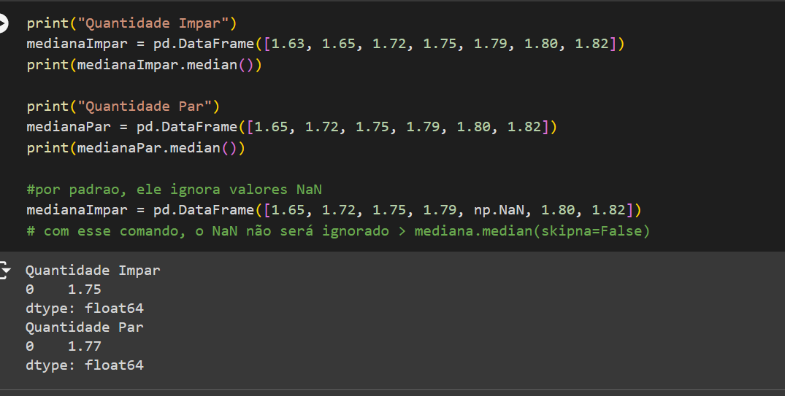

Amostragem
Desenvolvemos um bloco de código que coletava uma amostra estrátificada do Dataframe do Titanic.

Nesse bloco, primeiro separamos male e female em dois dataframes. Depois, definimos o percentual de 1% para male e female, de acordo com a quantidade de elementos de cada conjunto. Por último, coletamos as amostras de cada Dataframe e imprimimos o resultado. Obs: usamos o método shape apenas para nos retornar o número de elementos coletados.
Tendências Centrais
Em tendências centrais, abordamos: Moda, Mediana, Média aritmética, Percentil e Quartil. Como a biblioteca Pandas já disponibiliza métodos para tendencias centrais, utilizamos eles para simplificar nosso trabalho.
Aqui nesse exemplo, criamos um dataframe com uma quantidade impar de elementos e outro com uma quantidade par. Em seguida usamos o método median() para nos retornar a mediana de ambos os dataframes. Por padrão, Not a Number(NaN) são ignorados, mas se quisessemos que não o fossem, poderiamos usar o argumento 'skipna=False'.
Medidas de Dispersão
Já em medidas de dispersão, vimos amplitude e variância. Essa primeira é a diferença entre o valor máximo e mínimo de um conjunto de dados. Já variância, é a média dos quadrados das diferenças entre cada uma das observações e a média aritmética da amostra.

Nesse bloco de código, primeiro calculamos a amplitude das medidas dos predios da atividade proposta em aula. Depois, calculamos a variância usando o método var com os argumentos ddof=0 (graus de liberdade. Usamos 0 porque calculamos a população inteira), e numeric_only=True(apenas numeros).
Teste de Hipótese
Usamos teste de hipótese quando queremos verificar se os dados amostrais trazem evidência que apoiem ou não uma hipótese estatística formulada.

Nessa imagem, criamos um dataframe para dados observados e outro para dados esperados. calculamos o qui quadrado usando dois loop for e, por fim, imprimimos o resultado.
Link do Colab com todas as atividades: